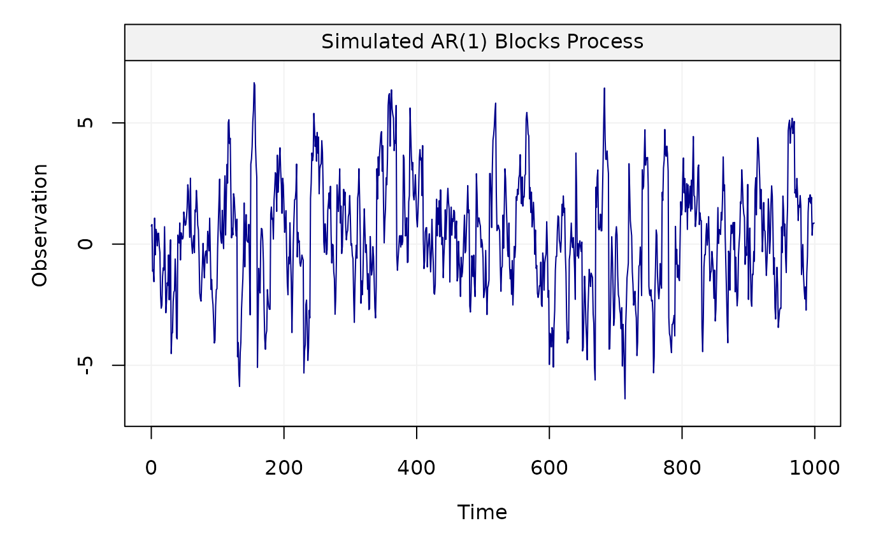
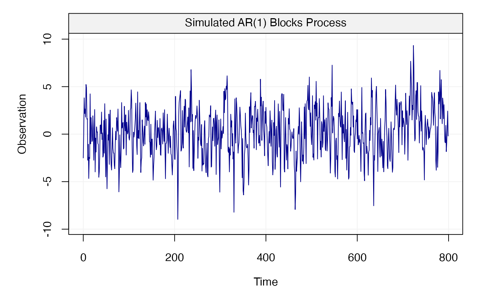

This function allows us to generate a non-stationary AR(1) block process.
gen_ar1blocks(phi, sigma2, n_total, n_block, scale = 10, title = NULL, seed = 135, ...)
| phi | A |
|---|---|
| sigma2 | A |
| n_total | An |
| n_block | An |
| scale | An |
| title | A |
| seed | An |
| ... | Additional parameters. |
A vector containing the AR(1) block process.
This function generates a non-stationary AR(1) block process whose theoretical maximum overlapping allan variance (MOAV) is different from the theoretical MOAV of a stationary AR(1) process. This difference in the value of the allan variance between stationary and non-stationary processes has been shown through the calculation of the theoretical allan variance given in "A Study of the Allan Variance for Constant-Mean Non-Stationary Processes" by Xu et al. (IEEE Signal Processing Letters, 2017), preprint available: https://arxiv.org/abs/1702.07795.
